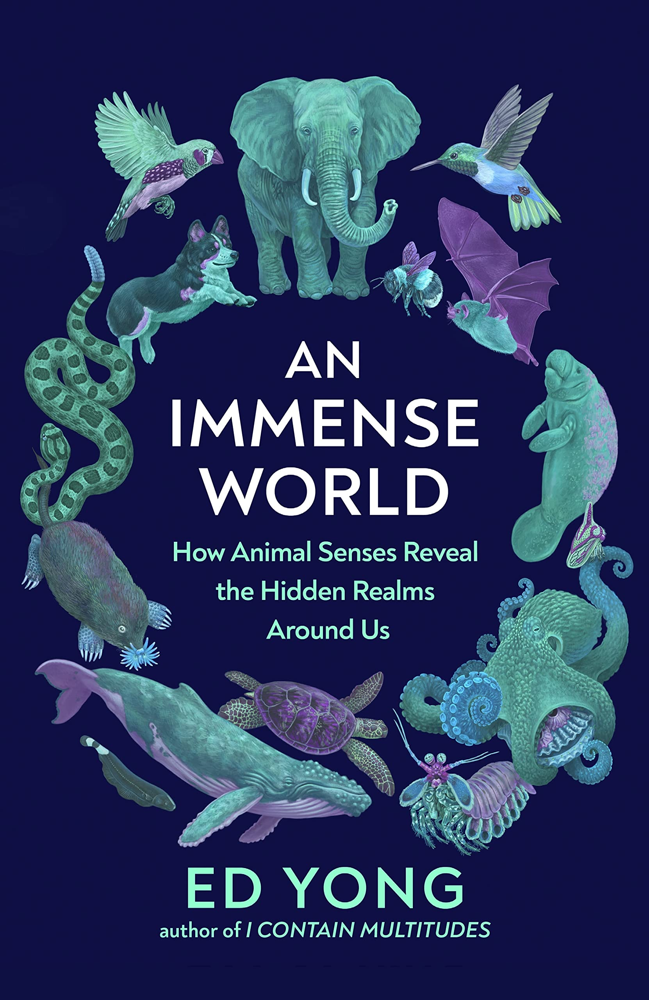

Ed Yong

This review is the initial impression of our editorial team after reading approximately one-tenth of the book.
DISCLAIMER: The opinions expressed in the Early Review might not necessarily have a correlation with the Final Review of the book.
Popular Science has a new storyteller and one who can
weave a mesmerizing labyrinth of the banal and even the often neglected aspects of our existence.
The leitmotif of his book is an organism's Umwelt --- its 'sensory bubble' or 'perceptual world' ---
is both poetic and a recursively hypnotic narrative technique. If Carl Sagan was a master of
storytelling about the cosmos, Yong is his successor in the hidden sensory realms around us.
He compares tremendous olfactory capabilities of dogs to that of humans in a fascinating way
only to debunk the myth that scientific basis for such comparison can be misleading. The vivid
description of how crucial pheromones are to the ant's existence makes it almost unputdownable and
you find yourself fighting the urge to sleep even at 2 am in the morning. One can almost visualise
his lines being read in a documentary with David Attenborough's voiceover. This is his first book,
but at the risk of sounding repetitive, like Sagan, Yong evokes the impulse to rush through his book
only to pick up his next, or as in the latter case, his previous one. It is difficult to retain the
reader's interest, more so, in the popular science genre. For the sake of popular science, one can
only hope that the rest of the book matches up to expectations, but, intuitively, it almost seems
that Yong has mastered the art of exceeding expectations quite consistently.